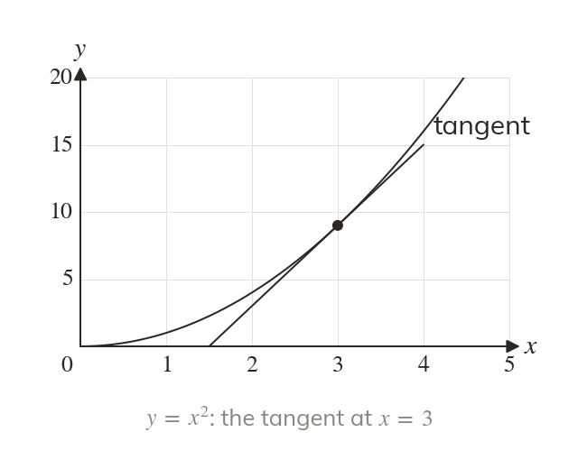
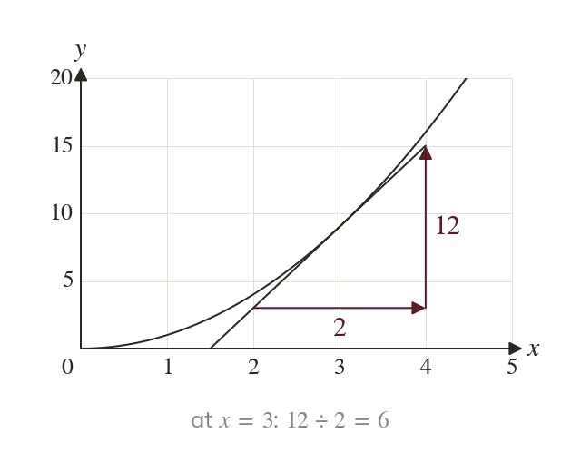
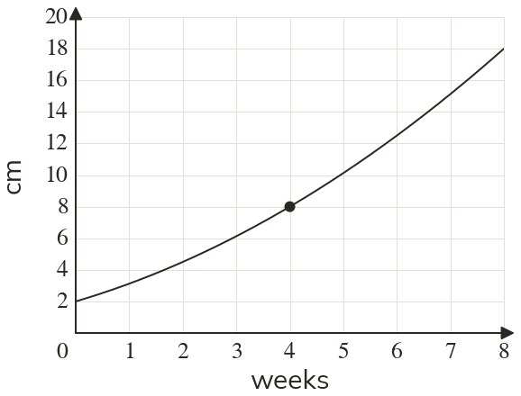
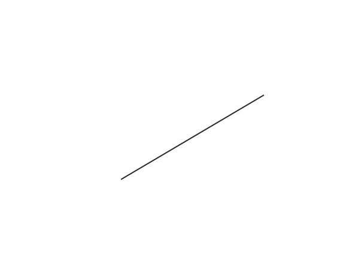
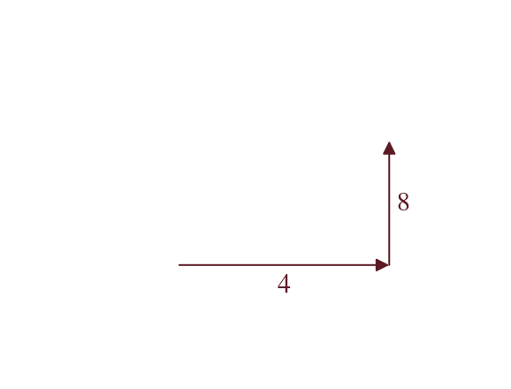
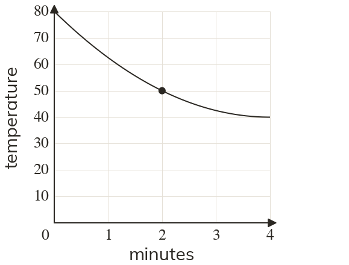
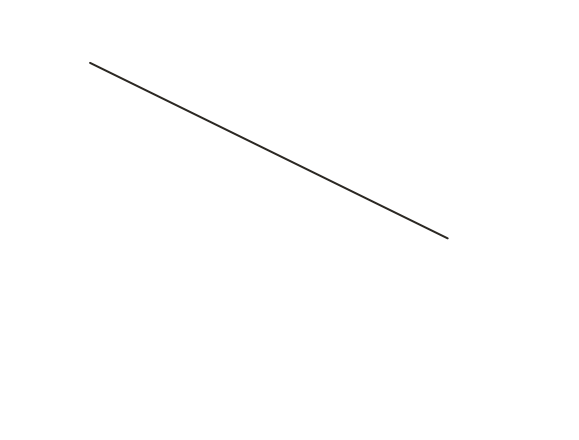
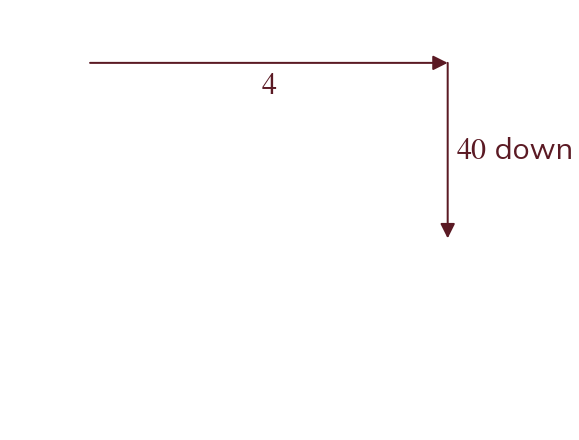
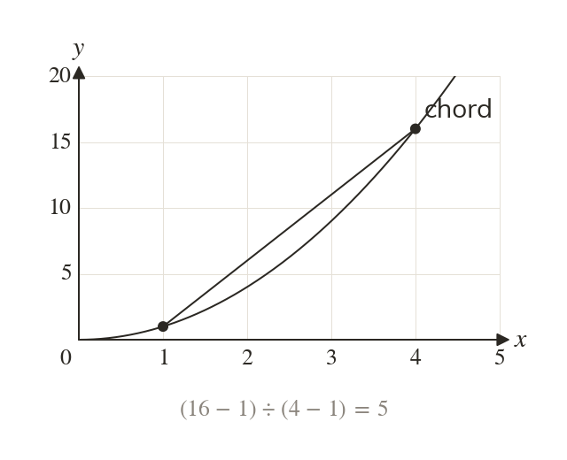
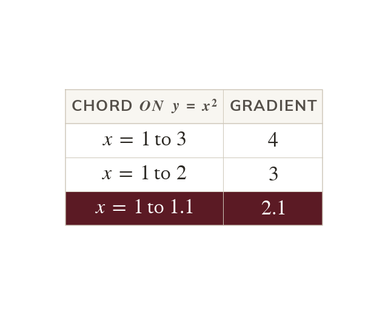

The gradient changes along a curve
A curve's steepness changes from point to point. A tangent touches the curve and shares its gradient there.
A speedometer shows speed at one instant, not across a whole journey. On a curved graph, a straight line drawn at one point measures that instant.
Work down the page at your own pace. Write every answer in your book first, then click to check it.
Read each card, then follow the worked examples one step at a time.

A curve's steepness changes from point to point. A tangent touches the curve and shares its gradient there.

The gradient is the tangent's rise over its run, on the axis scales. A large triangle reads it most accurately.






Pick an answer. If it's wrong, the feedback tells you which mistake it was.
Read each card, then follow the worked examples one step at a time.

A chord joins two points on the curve. Its gradient is the average rate of change between them.

As the second point moves closer, the chord's gradient nears the tangent's. At on the chords close in on
Pick an answer. If it's wrong, the feedback tells you which mistake it was.
Finished? Next lesson: 10H.16.1 Averages from Grouped Data.
Log in, then search for a code to practise that skill.
Videos, worksheets and more on each part of this lesson.